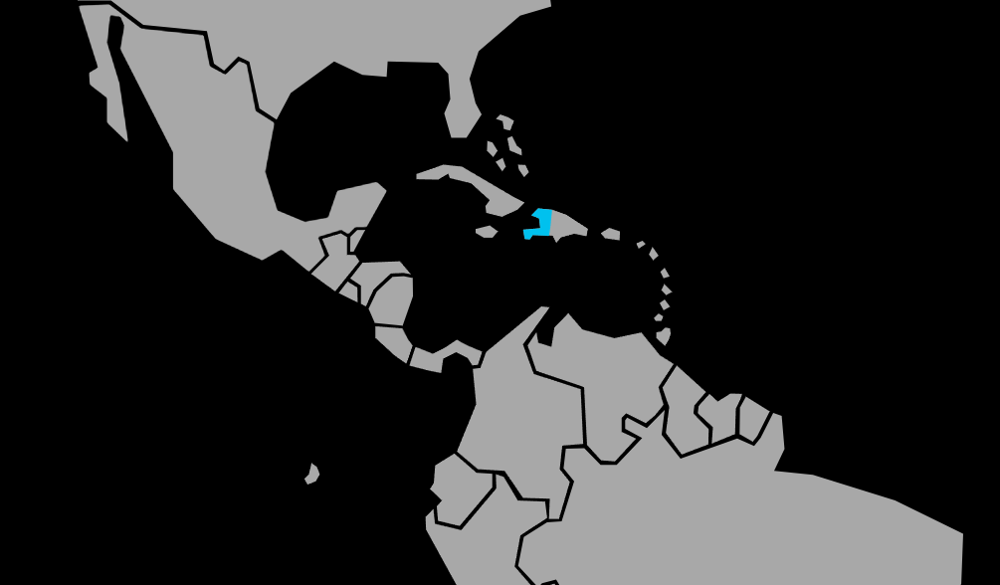

Systématique
- Ordre : Cyprinodontiformes
- Famille : Poeciliidae
- Genre : Limia
- Espèce : Limia nigrofasciata
Limia nigrofasciata est un vivipare caribéen de taille modeste, caractérisé par des bandes sombres verticales sur les flancs et une activité constante en zone médiane et supérieure.
Les adultes atteignent généralement 4–6 cm, avec des mâles plus élancés et souvent plus contrastés que les femelles, qui sont plus rondes et plus grandes.
L’espèce vit en groupes lâches; une bonne dynamique de harem (plusieurs femelles pour un mâle) limite le harcèlement et permet d’observer des comportements sociaux variés, faits de poursuites et d’exhibitions.
Globalement active mais plutôt paisible, elle cohabite bien avec d’autres petits poissons vifs de taille similaire, dans un aquarium bien planté offrant des refuges pour les femelles et les jeunes.
Reproduction : vivipare; les femelles donnent régulièrement naissance à de petites portées d’alevins entièrement formés, susceptibles d’être prédatés si le décor est trop ouvert.
Un décor dense en plantes fines, mousses et racines augmente fortement le taux de survie des jeunes, en leur offrant de nombreuses cachettes dès la naissance.
Dimorphisme sexuel : mâles plus petits, fins, munis d’un gonopodium; femelles plus grandes, au ventre plus rond, surtout lorsqu’elles sont gravides.
Biotope : rivières, ruisseaux et marécages de faible profondeur, parfois légèrement saumâtres, avec végétation aquatique dense, racines et zones ensoleillées.
Répartition
Origine naturelle :
- Île d’Hispaniola, principalement Haïti, avec des populations signalées en République dominicaine.
- Milieux d’eau douce à légèrement saumâtre: bassins côtiers, canaux, ruisseaux lents, marais et zones peu profondes de lacs.
Les eaux peuvent être claires à légèrement troubles, souvent fortement ensoleillées et riches en végétation aquatique, algues et racines.
En aquarium, un bac bien planté, avec des zones dégagées pour la nage et quelques plantes flottantes, reproduit bien ces conditions.
Paramètres de maintenance
Température : 22 à 28 °C, avec une préférence autour de 24–26 °C.
pH : 7,0 à 8,2, l’espèce appréciant une eau neutre à alcaline.
GH : 8 à 20 °dGH; une eau minéralisée à dure convient bien.
Courant : faible à modéré, avec bonne oxygénation et filtration efficace pour gérer la charge organique des vivipares.
Volume conseillé : à partir de 80 L pour un petit groupe, davantage en présence de plusieurs mâles ou en cohabitation avec d’autres espèces vives.
Régime alimentaire
Régime : omnivore opportuniste; consomme algues, biofilm, micro‑invertébrés, paillettes et granulés de petite taille.
Un apport régulier de compléments végétaux (légumes pochés, spiruline, pastilles pour herbivores) aide à prévenir les problèmes digestifs et à maintenir de bonnes couleurs.